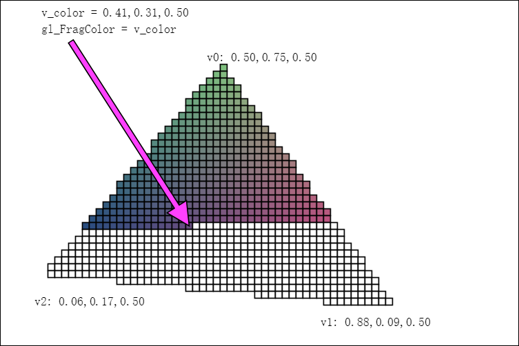

在实现图形学相关概念时，还是发现对 WebGL 一知半解是不够的，所以特别单独学习一下，顺便记录一些其他方法。
# 图形渲染管线

上图取自 LearnOpenGL。蓝色部分是我们可以自己定义的部分。暂时还没有接触到几何着色器，先把重点放在顶点着色器和片段着色器上。
输入数据是顶点数据，顶点着色器处理每一个顶点数据，之后经过图元装配、几何着色器、光栅化之后进入片段着色器中。到片段着色器这里，处理对象就成了每一个片段（片段相当于像素），片段着色器的输入值也都是经过插值过的。片段着色器之后经过测试和混合呈现到屏幕上。
# 着色器和着色程序
# 顶点着色器

上图取自 WebGLFundamentals。
输入的是包含九个顶点数据的数组，顶点着色器对每个顶点数据运行一次。
attribute 表示的就是顶点数据，这里定义了一个 a_position 表示顶点的位置，也可以用 attribute 来表示任何输入的每个顶点的相关数据，比如纹理坐标、法向量、顶点颜色等。
至于另一个 u_matrix，表示进行一个 MVP 变换。类型是 uniform，表示全局变量，在顶点着色器、几何着色器、片段着色器中都可以访问到。全局变量在程序运行前进行赋值，在运行过程中全程有效。
最后设置了 gl_Position，这是一个顶点着色器设置的特殊变量，表示…… 顶点的位置。
除此之外，顶点着色器还可以用 varying 类型变量来把数据从顶点着色器传到片段着色器中。依照渲染的图元是点， 线还是三角形，顶点着色器中设置的可变量会在片断着色器运行中获取不同的插值。
下面是一个最简单的顶点着色器。
attribute vec4 aVertexPosition; | |
attribute vec4 aVertexColor; | |
uniform mat4 uModelViewMatrix; | |
uniform mat4 uProjectionMatrix; | |
varying lowp vec4 vColor; | |
void main(void) { | |
gl_Position = uProjectionMatrix * uModelViewMatrix * aVertexPosition; | |
vColor = aVertexColor; | |
} |
# 向顶点着色器传入顶点属性 (attribute)
我们通过缓冲来向顶点着色器中输入 attribute。
需要做的有两步：把数据全部装入缓冲、告诉 WebGL 如何解析数据。
// 把数据全部装入缓冲 | |
// 顶点坐标 | |
this.positionBuffer = gl.createBuffer(); | |
gl.bindBuffer(gl.ARRAY_BUFFER, this.positionBuffer); | |
gl.bufferData(gl.ARRAY_BUFFER, new Float32Array(Cube.positions), gl.STATIC_DRAW); | |
// 告诉 WebGL 如何解析数据 | |
gl.bindBuffer(gl.ARRAY_BUFFER, this.positionBuffer); | |
gl.vertexAttribPointer( | |
Cube.programInfo.attribLocations.vertexPosition, // index | |
3, // size | |
gl.FLOAT, // type | |
false, // normalized, | |
0, // stride | |
0 // offset | |
); | |
gl.enableVertexAttribArray(Cube.programInfo.attribLocations.vertexPosition); |
创建一个缓冲，要先调用 bindBuffer 绑定一个特定缓冲，然后再调用 bufferData 向这个特定缓冲中装入。
在告诉 WebGL 如何解析时也要先绑定一个特定缓冲，然后再说如何解析，最后还要 enableVertexAttribArray，以顶点属性位置值作为参数，启用顶点属性；顶点属性默认是禁用的。
# 片段着色器

上图取自 WebGLFundamentals，推荐去看原图。
输入是顶点着色器传入的 varying 类型变量，进入片段着色器时已经是被插值过的了。
片段着色器要设置的是 gl_FragColor，表示这个片段的颜色。
一个最简单的片段着色器：
varying lowp vec4 vColor; | |
void main(void) { | |
gl_FragColor = vColor; | |
} |
# 着色程序
WebGL 中初始化着色程序：
// Initialize a shader program | |
function initShaderProgram(gl, vsSource, fsSource) { | |
const vertexShader = loadShader(gl, gl.VERTEX_SHADER, vsSource); | |
const fragmentShader = loadShader(gl, gl.FRAGMENT_SHADER, fsSource); | |
const shaderProgram = gl.createProgram(); | |
gl.attachShader(shaderProgram, vertexShader); | |
gl.attachShader(shaderProgram, fragmentShader); | |
gl.linkProgram(shaderProgram); | |
if (!gl.getProgramParameter(shaderProgram, gl.LINK_STATUS)) { | |
alert("Unable to initialize the shader program: " + gl.getProgramInfoLog(shaderProgram)); | |
return null; | |
} | |
return shaderProgram; | |
} | |
// Create a shader | |
function loadShader(gl, type, source) { | |
const shader = gl.createShader(type); | |
gl.shaderSource(shader, source); | |
gl.compileShader(shader); | |
if (!gl.getShaderParameter(shader, gl.COMPILE_STATUS)) { | |
alert("An error occurred compiling the shaders: " + gl.getShaderInfoLog(shader)); | |
gl.deleteShader(shader); | |
return null; | |
} | |
return shader; | |
} |
# 向一个着色程序传入 uniform 类型
注意用语，“向顶点着色器传入 attribute 类型”、“向着色程序传入 uniform 类型”。
在传入 uniform 之前要先使用这个着色程序，也就是先 useProgram，不然会出现 INVALID_OPERATION: uniform1i: location not for current program 的错误。
// tell WebGL to use our program | |
gl.useProgram(Cube.programInfo.program); | |
// set the shader uniforms | |
gl.uniformMatrix4fv( | |
Cube.programInfo.uniformLocations.projectionMatrix, // location | |
false, // transpose | |
projectionMatrix // data | |
); | |
gl.uniformMatrix4fv( | |
Cube.programInfo.uniformLocations.modelViewMatrix, // location | |
false, // transpose | |
modelViewMatrix // data | |
); |
# 绘制
最后使用 drawElements 绘制。
// draw elements | |
gl.drawElements( | |
gl.TRIANGLES, // mode | |
36, // count | |
gl.UNSIGNED_SHORT, // type | |
0 // offset | |
); |
基本的步骤就到这里为止。
后续应该还有一些深入的待更新。